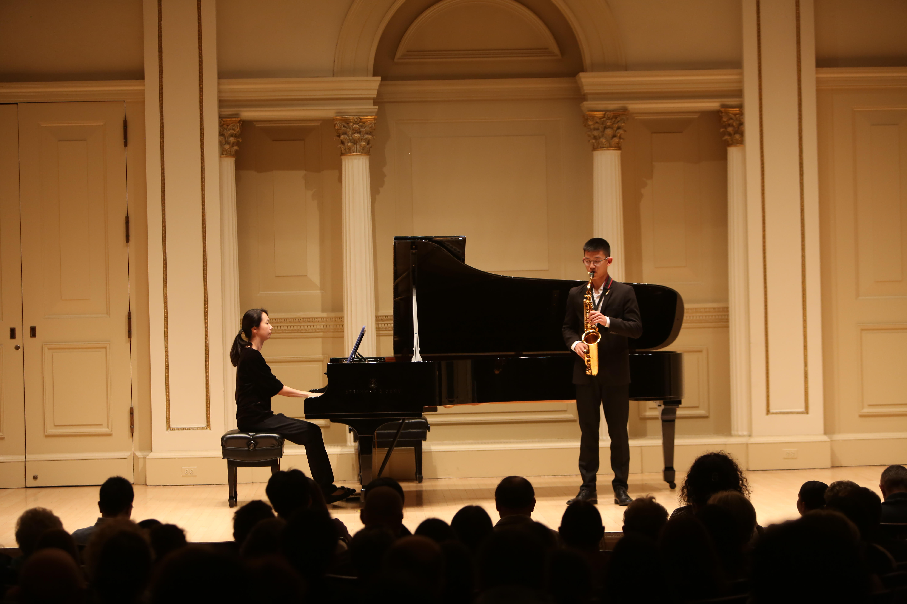

steven
|
Steven Chen is a saxophonist and singer based out of sunny San Diego, California.
Steven is currently principal saxophonist in the Canyon Crest Academy (CCA) Wind Ensemble and lead alto in the CCA jazz band. He was lead alto in the 2023 and 2024 All State Junior High Jazz Bands and received the Kevin Garren scholarship in 2024. Steven is also an alumnus of the Stanford Jazz Camp, and was recently invited to attend the Stanford Jazz Institute in the summer of 2026.
Steven has performed in Carnegie Hall as a 1st prize winner of the 2024 International Concerto Competition at the American Fine Arts Festival. He was featured at the 2025 MTAC convention as the VOCE State Finals winner. Most recently, Steven was named the recipient of the Don Caneva Memorial Scholarship from the Coastal Communities Concert Band (CCCB). He will perform with the CCCB at their 2027 Salute to Young Musicians concert.
In his free time, Steven likes to read, follow soccer, and support live music.
-
The Yellow Jacket Shaun Martin
-
Strasbourg St. Denis Roy Hargrove
-
Smooth Operator Sade Adu/Ray St. John
-
It Could Happen To You Jimmy Van Heusen
-
On Green Dolphin Street Bronisław Kaper
-
All of Me Gerald Marks/Seymour Simons
In 2024, Steven founded JazzUp SD as a community for young musicians in San Diego. It has since grown to include dozens of members from all over San Diego County.
JazzUp SD hosts free community events, fundraisers for nonprofits, and enriching experiences for all. They have raised thousands of dollars for various causes in San Diego, all while uplifting a community of dedicated young musicians.
For more information about JazzUp SD, please visit their website and follow them on Instagram. Updates will be posted regularly!
-
22MayTicketsThe Black Box at Canyon Crest AcademySan Diego, CA
